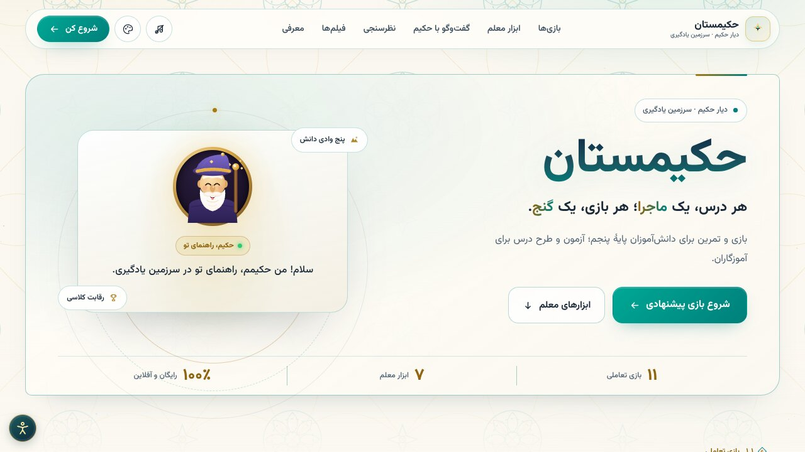
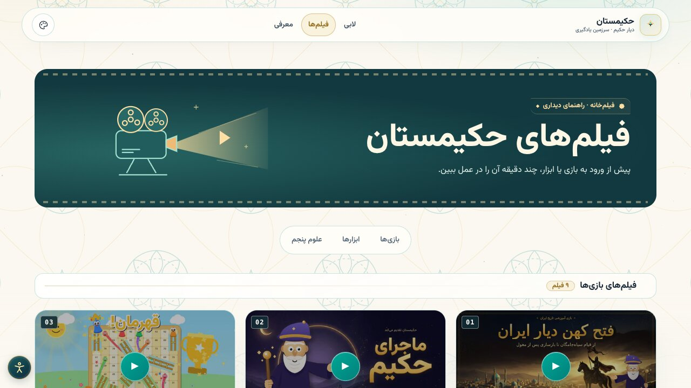
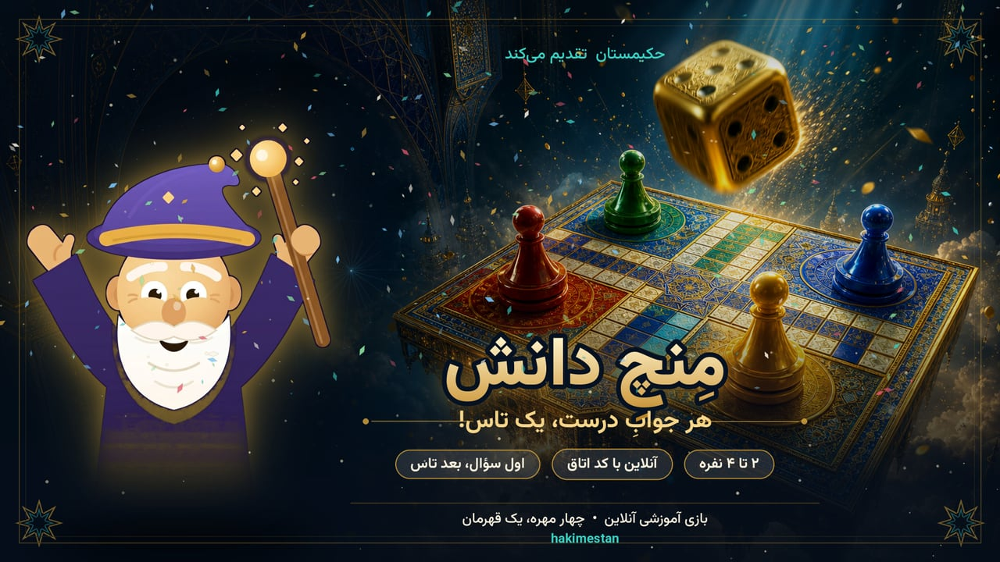
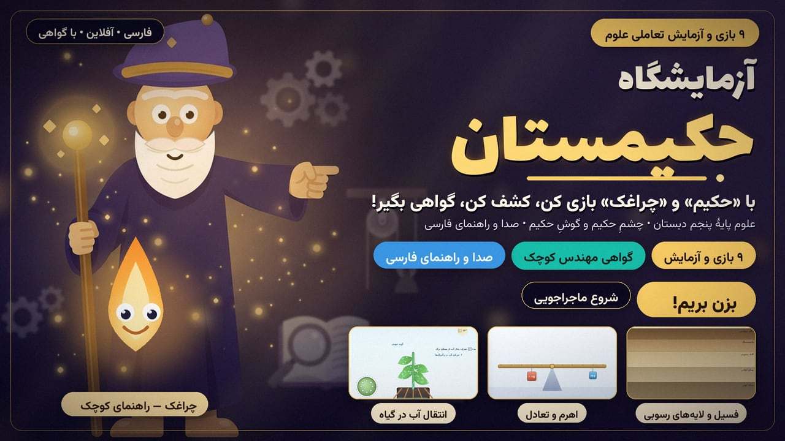
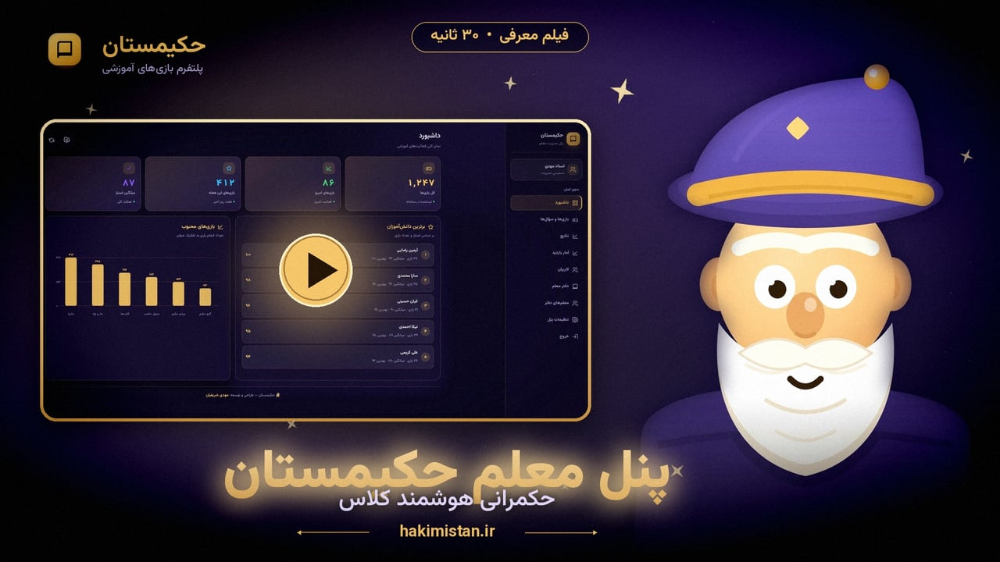

برای داوران جشنواره
شناسنامهٔ حکیمستان
معرفی پروژه حکیمستان
حکیمستان — دیار حکیم، سرزمین یادگیری
مهدی شریفیان
معلم پایه پنجم ابتدایی — استان گلستان، گنبدکاووس
📖 این پروژه چیه؟
«حکیمستان» یک سامانهی آموزشی تعاملی بر پایهی HTML است که شامل ۱۷ بازی آموزشی، ۷ ابزار (آزمونساز، دفتر معلم، کارگاه طرح درس، مبدل سؤال، پیامرسان کلاسی، پنل معلم و درسگاه) و گفتوگو با دستیار هوشمند «حکیم» است؛ همراه با بیش از ۸۰ سؤال آماده و ۲۷ فیلم معرفی.
این سامانه برای پایه پنجم ابتدایی طراحی شده و هدفش این است که مفاهیم درسی از طریق بازی، یادگیری فعال و بازخورد فوری به دانشآموز منتقل شود.
تمام محتوا با HTML، CSS و JavaScript خالص ساخته شده و بهصورت PWA روی هر مرورگر و هر دستگاهی (موبایل، تبلت، رایانه) بدون نیاز به نصب اجرا میشود.
همهٔ صفحههای اصلی — لابی، فیلمها و همین صفحهٔ معرفی — روی یک هویت بصری واحد به نام «کاشی» (کرم روشن، فیروزه و طلا، با نقش اسلیمی) ساخته شدهاند و تم انتخابی کاربر (کاشی، اقیانوس یا صبح فیروزه) بهصورت مشترک در همهٔ صفحهها باقی میماند.

📜 مسیر شکلگیری
سه بازی آزمایشی در کلاس واقعی
در سال تحصیلی گذشته، سه بازی آموزشی به دانشآموزان کلاس پایه پنجم داده شد. بچهها بازیها رو دوست داشتن و گفتن: «بازم بساز!»
ساخت «حکیمستان»
ایدهٔ «حکیمستان» از همان جملهٔ بچهها آمد؛ امسال با همین انگیزه، پلتفرمی کامل با ۱۷ بازی آموزشی، ۷ ابزار، پیامرسان کلاسی و دستیار هوش مصنوعی «حکیم» ساخته شد.
📚 برای کدوم درسها؟
بازیها
| بازی | درس | پایه | نوع |
|---|---|---|---|
| فتح کهن دیار ایران | مطالعات اجتماعی (دروس ۱۸-۲۱) | پنجم | سوالهای ثابت |
| ماجرای حکیم | ادبیات فارسی | پنجم | قابل شخصیسازی |
| مار و پلهی دانش | علوم | پنجم | قابل شخصیسازی |
| کارتهای حکیم | چند درس | پنجم | قابل شخصیسازی |
| جدول حکمت | هدیه + علوم | پنجم | قابل شخصیسازی |
| راز گنج حکیم | اخلاق + ریاضی | پنجم | قابل شخصیسازی |
| آزمایشگاه ۲بعدی | علوم (۹ آزمایش تعاملی) | پنجم | محتوای ثابت |
| منچِ دانش آنلاین | هر درس (۲ تا ۴ نفره) | پنجم | قابل شخصیسازی |
| مار و پله آنلاین | هر درس (۲ تا ۴ نفره) | پنجم | قابل شخصیسازی |
| تقسیم چکشی (مدرسه ریاضی) | ریاضی (تقسیم، ۵ مرحله) | پنجم | محتوای ثابت |
| ماموریت زمان (مدرسه ریاضی) | ریاضی (ساعت و زمان، ۸ مرحله) | پنجم | محتوای ثابت |
| الگوستان (مدرسه ریاضی) | ریاضی (الگوهای هندسی و عددی) | پنجم | محتوای ثابت |
| کسرستان (مدرسه ریاضی) | ریاضی (کسرها و چهار عمل، ۶ جزیره) | پنجم | محتوای ثابت |
| نسبتستان (مدرسه ریاضی) | ریاضی (نسبت، تناسب و درصد، ۵ سرزمین و ۶۷ فعالیت) | پنجم | محتوای ثابت |
| ممیزستان (مدرسه ریاضی) | ریاضی؛ عددهای اعشاری، ۱۰ ایستگاه و ۶۰ تمرین | پنجم | محتوای ثابت |
| نقشستان (مدرسه ریاضی) | ریاضی (تقارن و چندضلعیها، ۱۲ ایستگاه و ۴۸ تمرین) | پنجم | محتوای ثابت |
| واژهستان فارسی پنجم | فارسی (واژگان هر ۱۷ درس) | پنجم | محتوای ثابت |
ابزارهای معلم
| ابزار | توضیح | پایه |
|---|---|---|
| آزمونساز | ساخت آزمون + تصحیح خودکار | همه |
| دفتر معلم | حضور غیاب + نمرات | همه |
| کارگاه طرح درس | بانک نمونه + ویرایشگر | همه |
| مبدل سؤال | اتصال به بازیها | همه |
| پیامرسان کلاسی | چت امن | همه |
| پنل معلم | مدیریت کامل | همه |
| درسگاه | استودیوی ضبط تدریس از روی کتاب + وبکم | همه |
🧮 مدرسه ریاضی
«مدرسه ریاضی» بخش ویژهی ریاضی حکیمستان است؛ مجموعهای در حال رشد از بازیهای آموزشی ریاضی پایهٔ پنجم. اکنون هفت بازی دارد: از تقسیم و ساعت تا الگوهای هندسی و عددی، کسرها با چهار عمل، نسبت و درصد، تقارن و چندضلعی، و عددهای اعشاری. هر بازی یک کارت اختصاصی در صفحهٔ مدرسه دارد.
هفت بازی فعلی:
- 🔨 تقسیم چکشی — یادگیری تقسیم، قدمبهقدم و مرحلهبهمرحله با راهنمایی حکیم؛ ۵ مرحله، ۱۵ ستاره و گواهینامه در پایان
- ⏰ ماموریت زمان — خواندن ساعت، جمع و تفریق زمان و تبدیل واحدها در ۸ مرحلهی ماجراجویی، بههمراه چالش ترکیبی، نشانها و گواهینامه
- 🧩 الگوستان — کشف الگوهای هندسی و عددی؛ جدول الگو، شکل بعدی، قانون الگو و گواهینامهٔ پایان
- 🥧 کسرستان — کسرها، عددهای مخلوط و چهار عمل در ۶ جزیره و ۵۸ فعالیت؛ سه نگاه همزمان به یک کسر (نوار، مساحت، محور)، آزمایشگاه رسم و محور، مرور درهم، حدس اندازه، خطایابی با دلیل، پرسشهای کاملاً مشخص و گواهینامهٔ پیشرفت
- 🍋 نسبتستان — نسبت، تناسب و درصد در ۵ سرزمین و ۶۷ فعالیت؛ جدول تناسب دوسویه، فعالیتهای دستورزی، کمبوی پاسخهای پیاپی با رکورد در گواهی و گواهینامهٔ قهرمانی
- ٫ ممیزستان — عددهای اعشاری تا هزارم، محور، جمع، تفریق و ضرب؛ ۱۰ ایستگاه و ۶۰ تمرین. ورود به کارگاه
- ✧ نقشستان — تقارن محوری و مرکزی، نیمساز و چندضلعیها؛ ۱۲ ایستگاه با آموزش، رسم و گواهیِ فهرستدار. ورود به کارگاه
🥧 کارت اختصاصی «کسرستان» — یکی از بازیهای شاخص این بخش
کسرستان در صفحهٔ مدرسهٔ ریاضی یک کارت ویژه با هویت رنگی، نشان و برچسبهای خودش دارد. مسیر یادگیری آن شش جزیرهٔ آزاد است: مقایسه، جمع و تفریق، ضرب، تقسیم، مدلها و نمایشها، و «مرور و چالش نهایی»؛ در مجموع ۵۸ فعالیت. هر کسر همزمان به سه شکل (نوار، مساحت و محور) دیده میشود، برچسبها پنهان میشوند تا دانشآموز حدس بزند، و پاسخهای نادرست با دلیل بررسی میشوند.
دسترسی: صفحهٔ مدرسه ریاضی · بازی کسرستان. نسخهٔ تکفایل آفلاین با فونت توکار و بدون منبع خارجی هم برای کلاسهای بدون اینترنت فراهم است.
بازیهای این بخش کاملاً آفلاین و واکنشگرا هستند، بازخورد فوری و راهنمایی گامبهگام دارند و پیشرفت دانشآموز (ستارهها و گواهینامه) روی همان دستگاه ذخیره میشود؛ کسرستان همچنین نتیجهٔ فعالیتها را برای پنل معلم ارسال میکند.
⚙️ قابلیت شخصیسازی
همهی بازیهای سؤالی به جز «فتح کهن دیار ایران»، «آزمایشگاه ۲بعدی»، بازیهای «مدرسه ریاضی» و «واژهستان فارسی پنجم»، به صورت یک قالب آموزشی طراحی شدهاند. یعنی معلم میتواند بدون دانش برنامهنویسی، سوالهای هر بازی را مطابق درس خودش بسازد و تغییر دهد.
این ویژگی باعث میشود:
- ✓یک بازی، برای همهی درسها قابل استفاده باشد
- ✓معلم بتواند هر سال محتوای جدید بسازد
- ✓دانشآموزان هر پایهای از آن استفاده کنند
استثناها: بازی «فتح کهن دیار ایران» به دلیل محتوای اختصاصی تاریخی، «آزمایشگاه ۲بعدی» به دلیل شبیهسازهای آمادهی علوم، بازیهای «مدرسه ریاضی» به دلیل ماهیت گامبهگام و مهارتمحور ریاضی و «واژهستان فارسی پنجم» به دلیل وابستگی به واژگان کتاب فارسی، با محتوای ثابت ارائه میشوند.
🎯 آمادهٔ تست میدانی در فاز بعد
«حکیمستان» هنوز در اختیار مدارس یا کاربران عمومی قرار نگرفته و فعلاً فقط برای شرکت در این مسابقه آماده شده است.
فاز بعدی پروژه، تست میدانی واقعی آن در کلاس درس و دریافت بازخورد مستقیم دانشآموزان و معلمان خواهد بود.
🖼️ نماها
نمایی از محیط حکیمستان:




💬 پیامرسان کلاسی حکیمستان
یکی از ابزارهای مهم حکیمستان، پیامرسان کلاسی است که امکان ارتباط امن و ساده بین معلم و دانشآموزان را فراهم میکند.
قابلیتها:
- 💬 چت گروهی برای کلاس
- 🔒 چت خصوصی بین دو نفر
- 📷 ارسال عکس
- 🎤 ارسال پیام صوتی
- 📁 ارسال فایل
- ↩️ پاسخ به پیام (Reply)
- ✏️ ویرایش پیام
- ⭐ ستارهدار کردن پیامهای مهم
- 🛡️ پنل مدیریت برای معلم
- 🎨 تمهای رنگی متنوع قابل انتخاب
- 🔐 فیلتر کلمات نامناسب
🧙 گفتوگو با حکیم (هوش مصنوعی)
«حکیم» یک شخصیت هوشمند مبتنی بر هوش مصنوعی است که در لابی حکیمستان حضور دارد. دانشآموزان میتوانند با او گفتوگو کنند و دربارهی درسها، تاریخ ایران، ریاضی و موضوعات دیگر بپرسند.
حکیم با چهرهی متحرک، حالتهای احساسی مختلف (شاد، متفکر، دانا و...) و پاسخهای آموزشی، محیطی گرم و دوستانه برای دانشآموزان ایجاد میکند.
⚡ چطور یادگیری فعال ایجاد میکند؟
- ✓هر بازی، یک قالب آموزشی است که معلم میتواند سوالهای آن را مطابق درس خودش بسازد.
- ✓دانشآموز با حل مسئله و تفکر، به جای حفظ کردن، یاد میگیرد.
- ✓پس از هر پاسخ، بازخورد فوری به دانشآموز نمایش داده میشود.
- ✓سامانه کاملاً واکنشگرا است و روی موبایل، تبلت و رایانه کار میکند.
- ✓بدون نیاز به نصب — فقط با باز کردن لینک، بازی در دسترس است.
- ✓پیامرسان کلاسی برای تعامل بین معلم و دانشآموز در نظر گرفته شده است.